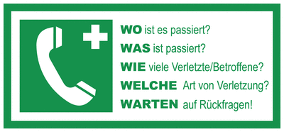

Schritt 1: Überprüfen Sie die Sicherheit.
Stellen Sie sicher, dass sich sowohl Sie als auch die Person, der Sie helfen wollen, an einem sicheren Ort befinden, um weitere Verletzungen zu vermeiden.

Schritt 2: Rufen Sie den Notruf.
Wählen Sie die Notrufnummer 112!
Sie klare Informationen über die Situation und Ihren Standort.

Schritt 3: Überprüfen Sie die Atmung.
Legen Sie die Person auf den Rücken auf eine feste Unterlage. Beugen Sie sich über sie und öffnen Sie den Mund der Person, um nach Anzeichen der Atmung zu suchen. Schauen, hören und fühlen Sie für Atembewegungen.

Schritt 4: Starten Sie die Herzdruckmassage.
Wenn die Person nicht atmet oder nur unregelmäßig atmet, beginnen Sie mit der Herzdruckmassage. Legen Sie den Handballen der einen Hand in die Mitte des Brustkorbs (etwa auf Höhe der Brustwarzen) und die andere Hand darüber. Drücken Sie fest und schnell etwa 5-6 cm tief, lassen Sie den Brustkorb zwischen den Kompressionen vollständig zurückkommen. Machen Sie dies im Rhythmus von etwa 100-120 Kompressionen pro Minute.

120bpm - Taktgeber
Schritt 5: Beatmung.
Nach 30 Herzdruckmassagen geben Sie zwei Beatmungen. Beugen Sie den Kopf der Person leicht zurück, heben Sie das Kinn an und öffnen Sie den Mund. Legen Sie Ihre Lippen um den Mund der Person und blasen Sie so kräftig ein, dass sich der Brustkorb sichtbar hebt.

Schritt 6: Fortfahren.
Setzen Sie die Herzdruckmassage und die Beatmungen im Verhältnis 30:2 fort, bis professionelle Hilfe eintrifft oder die Person wieder zu atmen beginnt.

Wichtig: Defibrilator.
Falls ein Defibrilator – auch AED genannt – in der Nähe ist, lassen Sie ihn sich bringen und folgen Sie den Anweisungen. Entfernen Sie sich keinesfalls selbst! – bitten Sie Umstehende um Unterstützung.